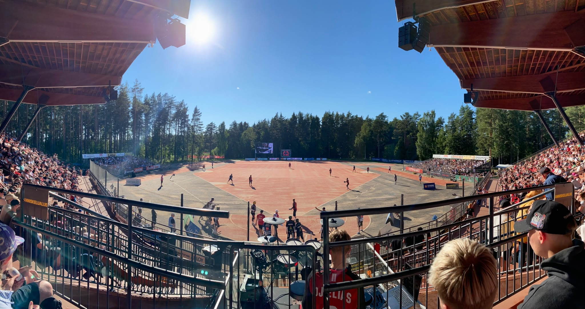

Pesäpallon synty
Pesäpallo kehitettiin Suomessa 1900-luvun alkupuolella. Sen kehittämiseen vaikutti Lauri Pihkala, joka halusi kehittää suomalaisiin oloihin sopivan pallopelin.
Kansallispeliksi
Pesäpallosta kasvoi vähitellen suosittu suomalainen urheilulaji. Sitä pelataan kouluissa, harrastuksena sekä eri sarjatasoilla ympäri Suomen.
Pesäpallo nykyään
Nykyään pesäpallossa järjestetään kilpailuja lapsille, nuorille ja aikuisille. Laji tunnetaan erityisesti Suomessa, ja sillä on pitkät perinteet monilla paikkakunnilla.

Miksi pesäpallo on tärkeä osa suomalaista urheilua?
Pesäpallo yhdistää liikunnan, joukkuehengen ja suomalaiset urheiluperinteet. Se tarjoaa mahdollisuuden harrastaa liikuntaa ja osallistua joukkueen yhteiseen toimintaan.
Takaisin etusivulle